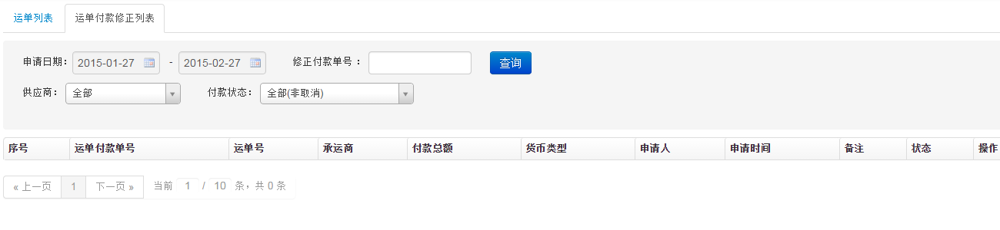
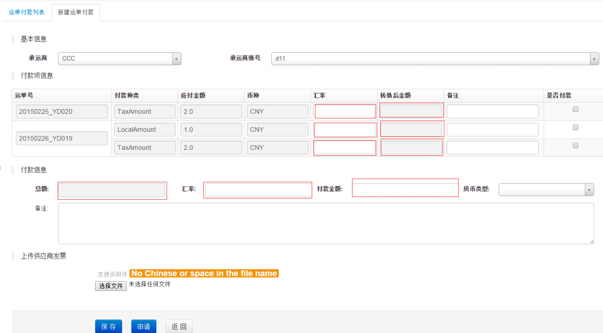
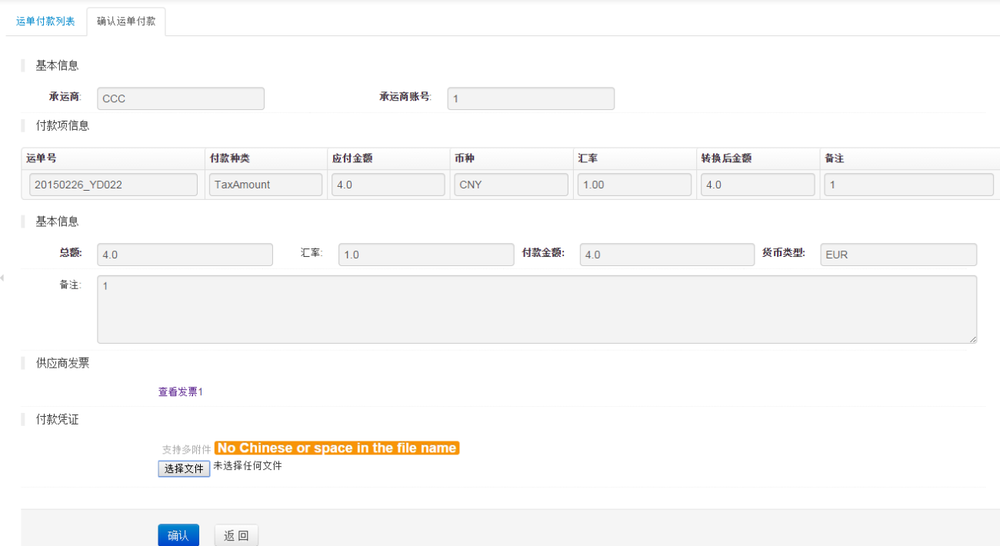

运单付款管理
1、运单付款列表页面,如下图

- 如图该页面可以对运单付款进行：新建、编辑、取消等操作
2、新建运单页面,如下图

- 进入新建运单付款页面，选择承运商会带出该供应商所有未付款的运单及运单款项，填写汇率后会自动计算转换后金额（转换后金额=应付金额x汇率）并选中付款项并累加到总额。计算出总额后填写汇率得到付款金额（可以改动付款金额），然后选择本次申请运单付款的货币类型
- 点击保存则付款进入草稿状态，点击申请进入申请状态（后台会自动发送邮件给付款人）
- 运单付款功能隐藏的公式：转换后金额=费用x汇率;总额=各转换后金额累加;付款金额=总额÷汇率
3、编辑航空运单页面,如下图

- 如上图，运单付款一旦确认，那么关联的相应运单费用项不可修改
- 运单所有的费用项都付款了，则付款项不能再修改，如果要修改可以到“运单付款修正”功能对该运单相应的项进行校正